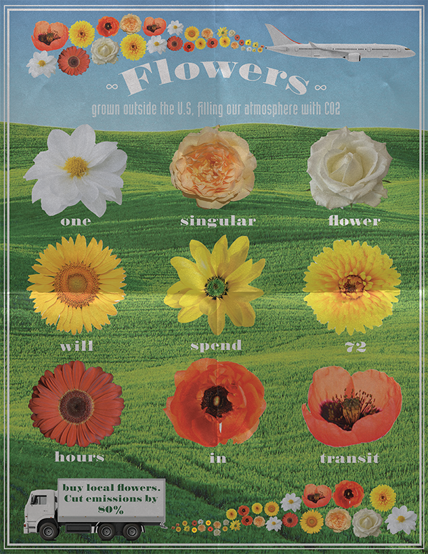

Portfolio
About
Contact
For this project, I aimed to captured the shapes and movement of local architecture in San Francisco. I took photographs of my favorite spots and took them into Adobe Illustrator where I
